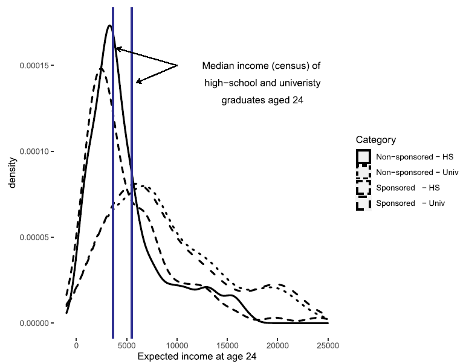

Context & Data
The Program: Compassion International
Compassion International (CI) is the third-largest child sponsorship program in the world, sponsoring approximately 2.2 million children across 29 countries. It operates as a faith-based NGO in partnership with local churches, relying primarily on local staff rather than foreign workers.
What distinguishes CI from simpler cash-transfer programs is its holistic design:
Material support
- School supplies and uniforms
- Food and basic goods
- Catastrophic health insurance
- Access to affiliated nurses and doctors
Socio-emotional development
- Classes on self-efficacy, self-esteem, and social trust
- Structured extracurricular activities
- Letter exchanges with international sponsors
- Academic tutoring in after-school sessions
The average sponsorship lasts 9.3 years, translating to roughly 4,000 hours of organized activities. The hypothesis is that this sustained exposure not only relieves material constraints but also broadens children’s perceived career horizons, making higher education feel more attainable.
In Mexico, CI operates in more than 185 centers serving 33,360 children.
Who CI Selects
Sponsorship is not random. CI follows a systematic procedure:
- Identify the most deprived communities in the poorest regions
- Partner with a local church to implement the program
- Church staff identify households facing the greatest need
- Household selects which child to enroll, subject to eligibility criteria:
- Lives within 30 minutes’ walk of a CI center
- Not already receiving sponsorship from another organization
- Household has ≤ 3 already-sponsored children
- Child was aged 9 or younger when CI arrived (lower priority given to those closer to 9)
Key implication for identification: Younger and more economically disadvantaged children are systematically more likely to be selected. This means sponsored and non-sponsored children are not comparable on observables, and likely not on unobservables either.
Fieldwork: Oaxaca and Chiapas, 2017
The survey was conducted between June and August 2017 in the southern Mexican states of Oaxaca and Chiapas, two of the country’s poorest.
Design: Eight rural communities were selected, with four hosting an active CI project and four serving as matched controls. Each CI site was matched to a nearby control community with comparable educational and healthcare infrastructure (one primary school, one middle school, one high school, one health center).
Survey subjects: - At CI sites: sponsored children and their next-oldest and next-youngest siblings (ages 10–18), plus random sampling of non-sponsored households - At control sites: every other household, all members aged 10–18
Sample Construction
| Step | Restriction | N |
|---|---|---|
| Initial survey | Ages 10–18 | 926 |
| Age restriction | Ages 12–15 only | — |
| — Reason 1 | Children start working after primary (~age 12) | |
| — Reason 2 | CI sites operational < 6 years on average | |
| — Reason 3 | Aligns with sponsorship eligibility (≤ 9 at start) | |
| Final sample | 403 | |
| Sponsored | CI group | 163 |
| Non-sponsored | Control group | 240 |
In Model 2 (which adds subjective income expectations), the sample is further restricted to 271 children who correctly interpreted the probability questions used to elicit income beliefs.
Summary Statistics
Table 1. The two groups differ in ways consistent with CI’s targeting: sponsored children are younger, significantly more likely to be Protestant, and come from poorer households (lower asset index). Aspirations are slightly lower in the sponsored group in raw terms, reflecting the selection of disadvantaged children.
| Variable | All (SD) | Sponsored (SD) | Non-Sponsored (SD) | t-test |
|---|---|---|---|---|
| Aspires: higher ed. (any) | 0.730 (0.445) | 0.712 (0.454) | 0.742 (0.439) | −0.030 |
| Aspires: university degree | 0.620 (0.486) | 0.571 (0.497) | 0.654 (0.477) | −0.084* |
| Age | 13.375 (1.105) | 13.006 (1.003) | 13.625 (1.102) | −0.619*** |
| Male | 0.469 (0.500) | 0.429 (0.497) | 0.496 (0.501) | −0.066 |
| Asset index | 0.057 (1.561) | −0.216 (1.516) | 0.244 (1.566) | −0.460*** |
| Protestant | 0.506 (0.501) | 0.730 (0.445) | 0.354 (0.479) | 0.376*** |
| Education father (yrs) | 6.797 (3.207) | 7.000 (3.006) | 6.659 (3.336) | 0.341 |
| Education mother (yrs) | 6.490 (3.161) | 6.321 (3.283) | 6.604 (3.077) | −0.283 |
| N | 403 | 163 | 240 |
*** p<0.01, ** p<0.05, * p<0.1. Asset index from first principal component of household assets.
Subjective Income Expectations
A distinctive feature of this paper is the collection of subjective income expectations, what children themselves believe they would earn at age 25 under each educational scenario. This is adapted from the methodology used in Mexico’s Prospera evaluation (Attanasio and Kaufmann, 2014).
How Expectations Were Elicited
For each of five education levels (primary, middle school, high school, technical school, university), each child was asked:
- “Assume you finish [level] and it is your highest degree. How certain are you that you will be working at age 25?” (0–100)
- “What is the maximum amount you could earn per month at age 25?”
- “What is the minimum amount you could earn per month at age 25?”
- “From 0 to 100, what is the probability your earnings will be at least \(x\)?“ where \(x = (\text{max} + \text{min})/2\)
Computing Perceived Returns
Assuming that income conditional on stated min and max follows a triangular distribution \(f(Y^\ell)\) on \([y^\ell_{\min},\, y^\ell_{\max}]\), the expected log-income for education level \(\ell\) is:
\[E[\ln(Y^\ell_i)] = \int_{y^\ell_{\min,i}}^{y^\ell_{\max,i}} \ln(y)\, f_{Y^\ell_i}(y)\, dy\]
This integral is computed directly from each child’s stated min, max, and the probability answer that pins the shape of the triangular distribution. The perceived return to level \(\ell\) is then:
\[\rho^\ell_i = E[\ln(Y^\ell_i)] - E[\ln(Y^{\ell-1}_i)], \qquad \ell = 2, 3, 4, 5\]
The variable \(\rho_{HE,i}\) (return to higher education specifically) enters Model 2 as a control variable to test whether beliefs about returns shape aspirations.
As a robustness check, the same expectations were estimated assuming a uniform distribution over \([y_{\min}, y_{\max}]\) instead of triangular, which does not use the probability question. Results are nearly identical, suggesting the triangular assumption does not drive the findings.
Validity Check
Table 2 compares children’s median stated income expectations with 2015 census data at 2017 prices, broken down by gender and region. Key patterns:
- Median expectations broadly align with census data, children have realistic beliefs on average
- A clear gender gap exists: female children expect roughly 50% lower income at the high school level than males
- Sponsored children show higher variance in expectations, suggesting more heterogeneous beliefs
The figure below (Figure 1 in the paper) shows the distribution of expected income by sponsorship status for high school and university. Both distributions are right-skewed, consistent with log-normal income, and the distribution modes are closely aligned with census medians.

Takeaway: Children’s subjective income beliefs are realistic on average, even at ages 12–15. However, as Model 2 shows, these beliefs do not significantly predict aspirations, suggesting that at this age, other factors (internal constraints, social norms, short-term thinking) dominate the decision.